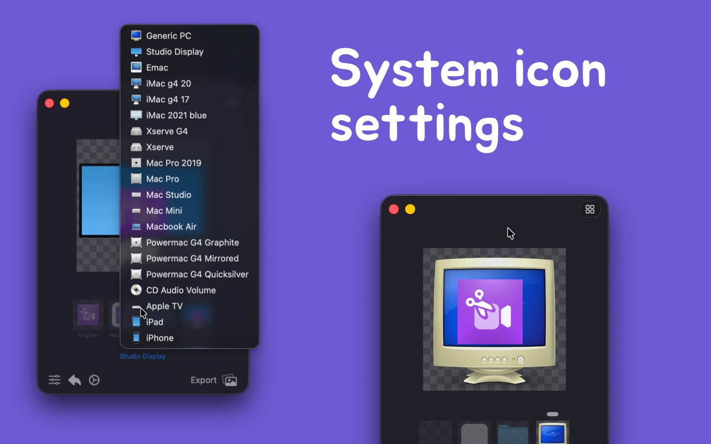

Effortlessly create and personalize icons from images, supporting macOS and iOS icon generation, folder icon creation and setting, and icon format conversion features.
This tool helps you create any icons for applications, automatically converting them into required 1x, 2x (Retina), and 3x formats, and generating a complete image set to ensure perfect display on all devices and resolutions.
Iconed supports using a URL Scheme to activate the tool and pass commands and parameters to import an image from a specified path for editing.
iconed:///Users/wangchujiang/Desktop/chrome.svg
From Terminal.app or Command Line:
open "iconed:///Users/wangchujiang/Desktop/chrome.svg"
In the browser, copy the following address into the browser's address bar and press Enter:
iconed:///Users/wangchujiang/Desktop/chrome.svg